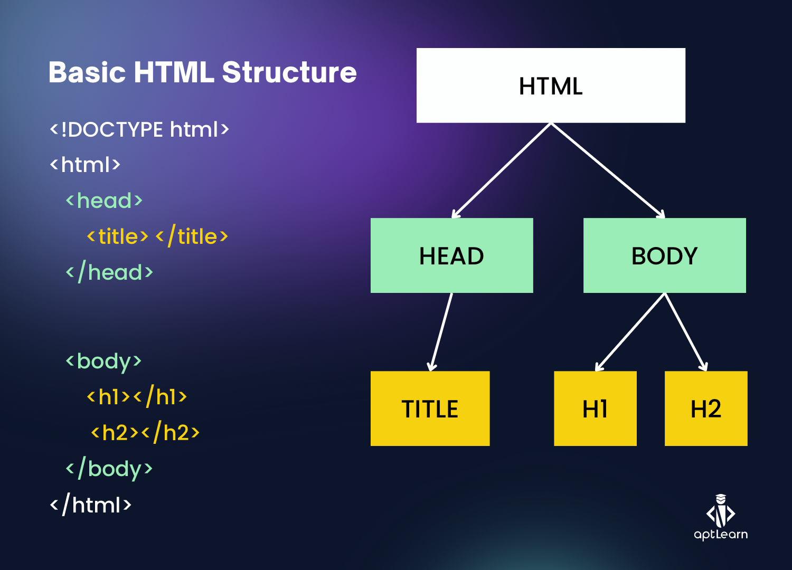

Hypertext Markup Language (HTML)
Category: Web Content & Structure
Definition
HTML is the standard markup language used to create the structure of web pages. It uses "tags" to tell the web browser how to display text, images, and other media.
The Role of Markup
Unlike a programming language that performs logic, HTML is a markup language. It "marks up" plain text so the browser understands the hierarchy of the content:
- Headings: Using
<h1>to<h6>for titles. - Paragraphs: Using
<p>for blocks of text. - Hyperlinks: Using
<a>tags—the "Hypertext" part that allows the World Wide Web to be a "web" of connected documents.
Structure of an HTML Element

Evolution: HTML5
The modern version is HTML5. It introduced new features that allow browsers to handle video, audio, and complex graphics natively without needing extra plugins (like the now-obsolete Flash).